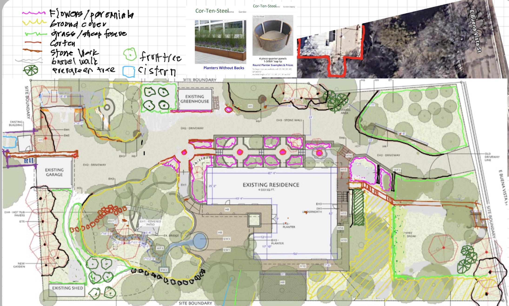
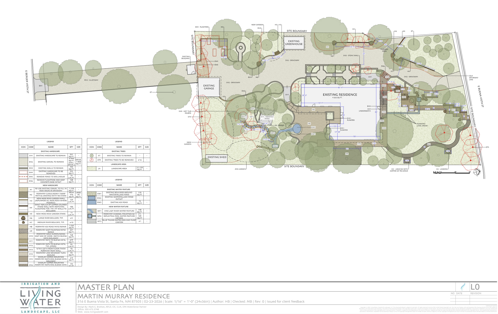
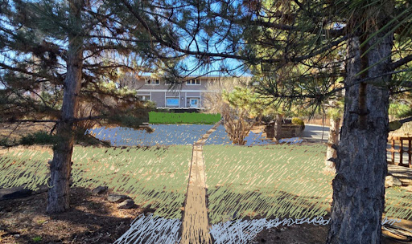
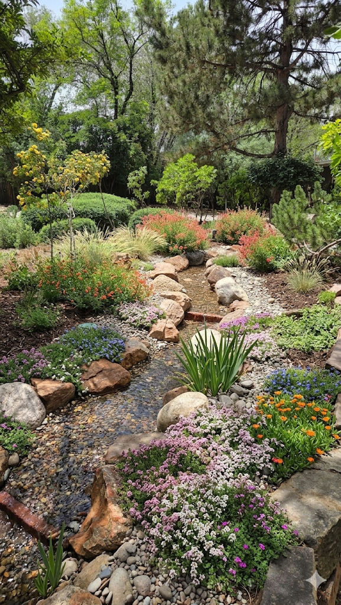
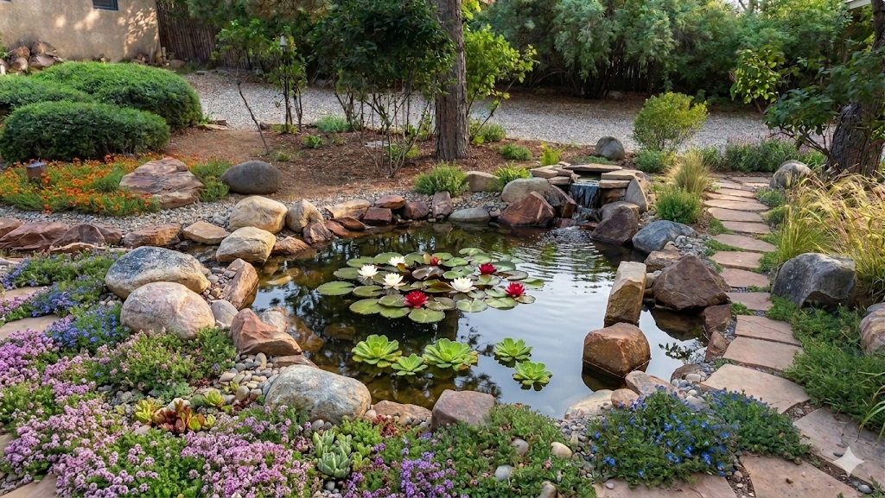

Garden Plan
This page presents the overall garden plan and section-by-section images for the front garden, greenhouse area, entrance garden, and rear garden. The garden should reveal itself slowly as you progress up the driveway.
Overall Plan
The full-site plan provides the layout context for each garden section shown below.


Front Garden
The front garden plan should present curb appeal. It is not an area where we will spend much time. The goal is a clean, relatively maintenance-free garden. The images are AI-generated and are just concepts.



Greenhouse
The greenhouse section supports propagation and protected growing, with adjacent planting zones designed for seasonal transitions. Apple orchard on the left in sheep fescue


Entrance Garden
Very colorful.

Rear Garden
Pathway creating to a zen garden to provide a tranquil buffer space for the new pond. The left image combines lavender and creeping thyme. The right image is just creeping thyme.


Pond and Stream
The pond and stream area introduces moving water, sound, and reflected light to create a calm focal point in the garden.

